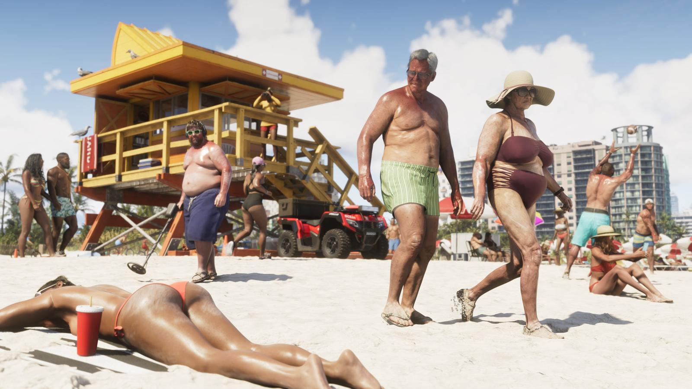

Тест: насколько хорошо ты помнишь Vice City 2002
Обновлено:

- 10 вопросов об оригинальной Vice City 2002 года.
- После каждого ответа — объяснение и факт.
- В конце — ваш «статус» в Вайс-Сити.
Как играть
19 ноября 2026 года мы вернёмся в Вайс-Сити — впервые за 24 года в новой номерной части. Но многие сегодняшние игроки родились позже, чем вышла оригинальная Vice City. Проверьте, что вы помните о первой поездке в город неона: 10 вопросов, объяснение после каждого ответа, итоговый статус в конце. Как город изменился с тех пор — Вайс-Сити в GTA 6: главный город Леониды.
Тест
Vice City вышла всего через год после GTA III (октябрь 2001) — по нынешним меркам немыслимо быстро. Между GTA 5 и GTA 6 прошло больше 13 лет. А между Vice City (2002) и GTA 5 (2013) Rockstar успела выпустить San Andreas, Liberty City Stories, Vice City Stories, GTA IV с двумя дополнениями и Chinatown Wars.
Ещё тесты: Тест: угадай регион Леониды по кадру · Тест: кто ты — Лусия или Джейсон?. Сколько осталось до возвращения в Вайс-Сити — Отсчёт до GTA 6 в вашем часовом поясе.
Источники: Rockstar Games; Wikipedia — Grand Theft Auto: Vice City (актёрский состав, дата выхода).